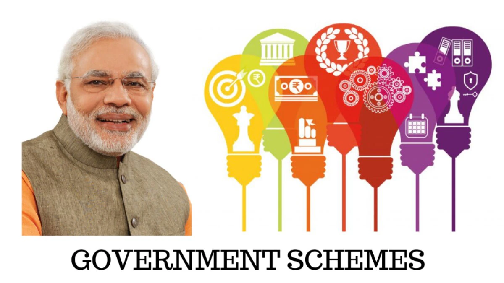
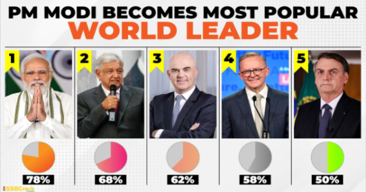

PM Narendra Modi
Introduction
PM Narendra Modi is a prominent political figure known for his leadership and vision. He has made significant contributions to the development and progress of India.
Early Life
PM Narendra Modi was born on September 17, 1950, in Vadnagar, Gujarat. He comes from a humble background and faced various challenges during his childhood.
Political Career
Narendra Damodardas Modi is an Indian politician who has served as the 14th prime minister of India since May 2014. Modi was the chief minister of Gujarat from 2001 to 2014 and is the Member of Parliament (MP) for Varanasi. He is a member of the Bharatiya Janata Party (BJP) and of the Rashtriya Swayamsevak Sangh (RSS), a right wing Hindu nationalist paramilitary volunteer organisation. He is the longest-serving prime minister from outside the Indian National Congress.

Government Initiatives
PM Narendra Modi has launched several initiatives to transform India. Some notable initiatives include Swachh Bharat Abhiyan, Make in India, and Digital India.
International Relations
PM Narendra Modi has established strong relationships with various countries. His diplomatic efforts have strengthened India's position on the global stage.

Popularity
The "Mood of the Nation" survey conducted annually between 2016 and 2021 consistently listed Modi as the most popular prime minister among members of the Indian public.A YouGov-Mint-CPR survey in 2022 also ranked Modi first, ahead of Jawaharlal Nehru.
